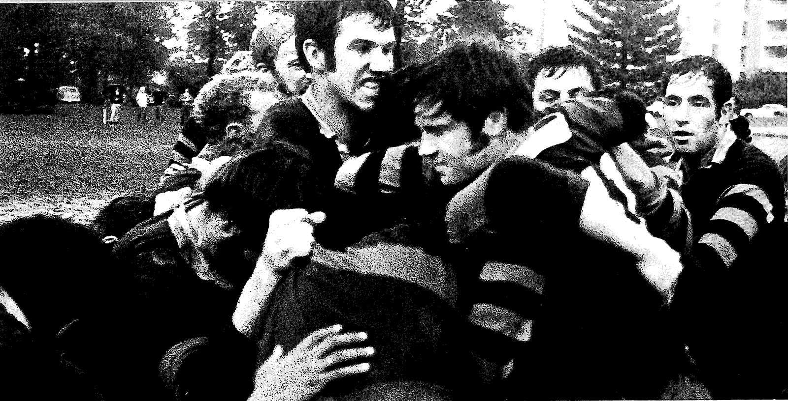
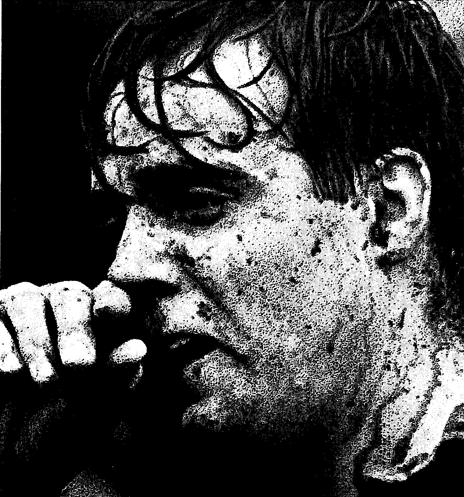
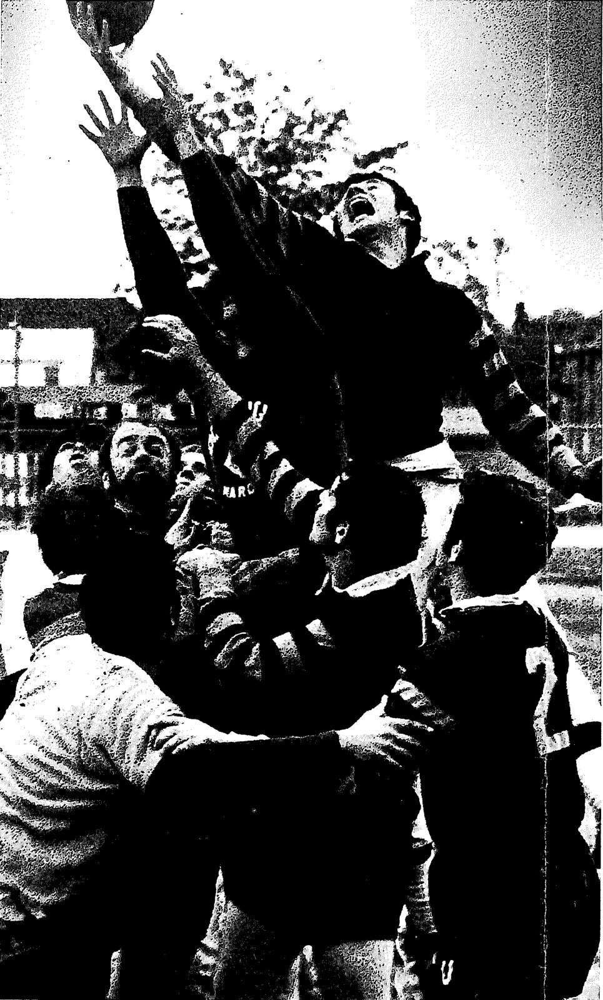
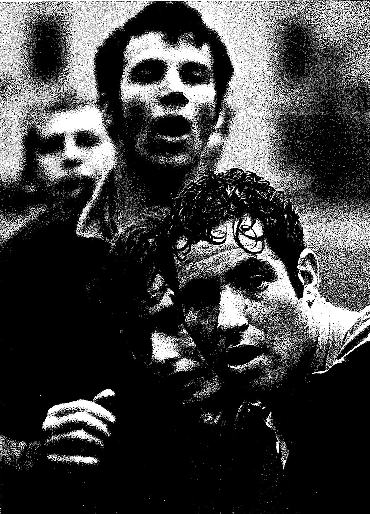
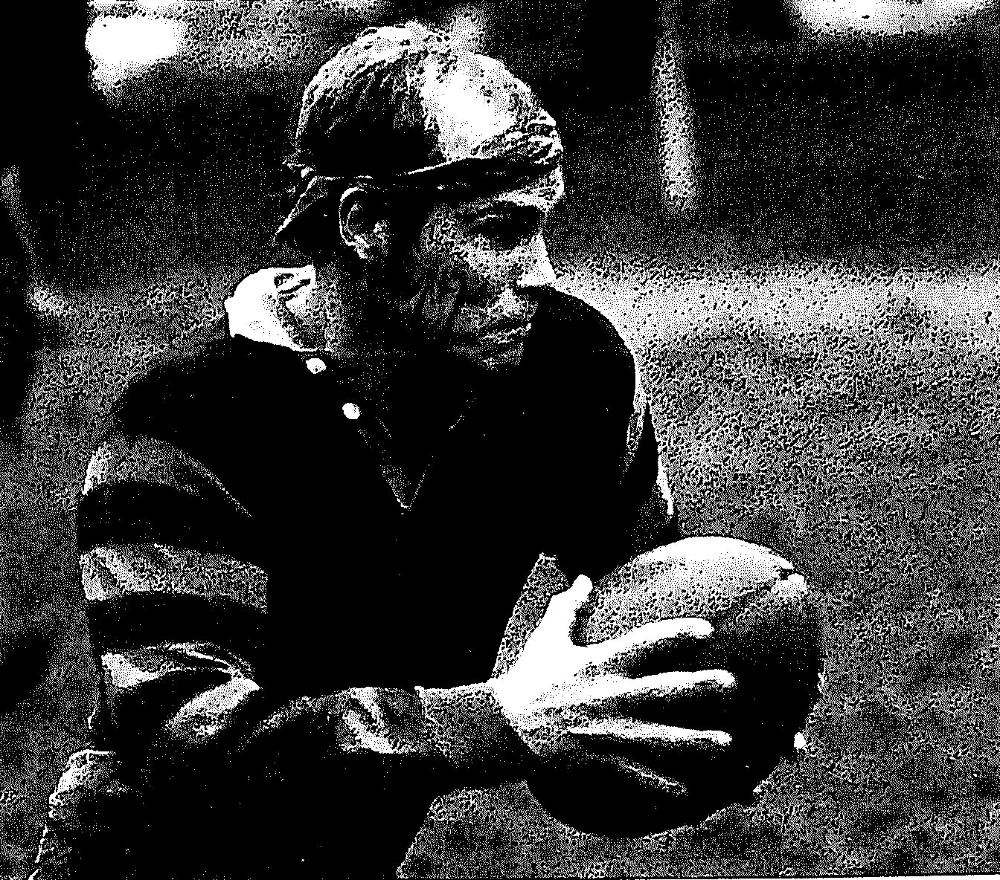
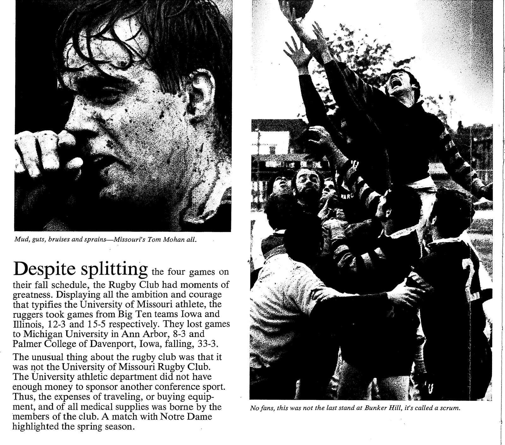

Mizzou Rugby Photo Archive
The University of Missouri yearbook gave the rugby club two pages of photographs for the 1969–70 school year.






Photos, programs, clippings, scorebooks — we want to see them.
Can you name the players in the ruck or the line out? Do you remember the Notre Dame match? Every detail helps.
Share Your Photos